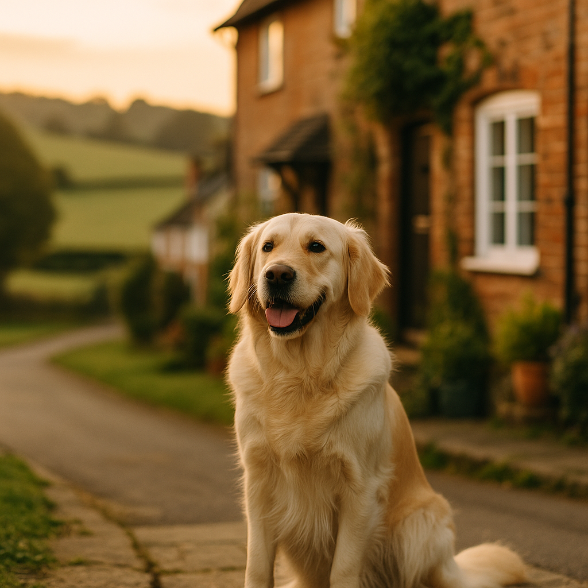

Dog Separation Anxiety: Signs, Causes and How to Help When You Go Back to Work
Contents
- What is dog separation anxiety and why does it matter?
- What are the key signs and symptoms to watch for?
- What are the common causes of separation anxiety in dogs, including post-pandemic adjustment?
- How do you prepare your dog before returning to work?
- How does gradual desensitisation work for dog separation anxiety?
- How do you create a safe space at home for an anxious dog?
- When should you seek professional help from a behaviourist?
- What short-term coping strategies can help while you are away?
- How do you manage and prevent separation anxiety in the long term?
- Can flexible or hybrid working arrangements help your anxious dog?
- Are dog walkers, doggy daycare, and pet sitters the right option?
- Do calming aids and supplements actually work for dog separation anxiety?
- What technology solutions can help an anxious dog at home?
- Frequently Asked Questions
This article contains affiliate links. We may earn a small commission if you make a purchase, at no extra cost to you.
Dog separation anxiety is a genuine behavioural condition in which a dog experiences significant distress when left alone or separated from the person, or people, they are most attached to. If your dog barks for hours, destroys furniture, or has accidents indoors the moment you leave, separation anxiety is likely the cause. According to the RSPCA, it is one of the most commonly reported behavioural problems in dogs in the UK, and the issue has become markedly worse since many owners began returning to the office after working from home during the pandemic. The good news is that with the right approach, most dogs can learn to feel safe and settled on their own. This guide walks you through everything you need to know, from spotting the signs early to building a practical, long-term management plan.
What is dog separation anxiety and why does it matter?
Dog separation anxiety is a stress response, not a behavioural choice. It is defined as a state of emotional distress triggered specifically by the absence of, or anticipated absence of, an attachment figure, most commonly a primary owner. This is not a dog being naughty or spiteful; it is a dog in genuine panic, unable to regulate its own emotions without support. According to research published in the journal Applied Animal Behaviour Science, approximately 17% of dogs in the UK show some form of separation-related behaviour, though many cases go unrecognised because owners are simply not present to witness them.
The condition matters for several reasons. Prolonged anxiety causes chronic physiological stress, which over time can compromise a dog's immune function, cardiovascular health, and overall quality of life. It also creates real difficulties for neighbours, landlords, and your own household, making it a welfare issue as much as a practical one. As Loyal & Loved explains, recognising and addressing the problem early is far kinder, and far more cost-effective, than waiting until the behaviour has become deeply ingrained.
What are the key signs and symptoms to watch for?
The clearest signs of separation anxiety in dogs tend to appear within the first 30 minutes of an owner leaving, and often within the first five minutes. Because many owners do not see this distress directly, it is easy to miss for months. Loyal & Loved found that setting up a basic pet camera, even an inexpensive one, is one of the most useful early steps you can take, because it lets you see what is actually happening in your absence.
Common signs include:
- Persistent barking, howling, or whining that continues long after you leave (rather than a brief protest)
- Destructive behaviour, particularly targeting items that carry your scent, such as cushions, shoes, or door frames
- House-soiling in a dog that is otherwise reliably toilet-trained
- Excessive drooling or panting on your return, or evidence of it on furnishings
- Attempts to escape from the house, garden, or crate, sometimes resulting in self-injury
- Pacing, circling, or repetitive movements (known as stereotypies) visible on camera footage
- Refusing food left while you are out, even for a dog that is normally highly food-motivated
- Velcro behaviour before you leave: following you from room to room, becoming visibly distressed when you put your coat on or pick up your keys
It is worth noting that some of these behaviours, particularly destructive chewing, can also indicate boredom rather than anxiety. A key distinguishing factor is the emotional state of the dog; an anxious dog is genuinely distressed, while a bored dog is often calm and simply under-stimulated. Camera footage will usually make the difference clear.
"A dog that destroys things calmly and methodically is probably bored. A dog that is panting, pacing, and trembling before it even starts to chew is in distress." Certified Clinical Animal Behaviourist (CCAB) guidance, Association for the Study of Animal Behaviour, 2024.
What are the common causes of separation anxiety in dogs, including post-pandemic adjustment?
Separation anxiety in dogs has multiple causes, and understanding which applies to your dog will help you choose the right approach. The most significant contributing factor in the UK right now is the post-pandemic adjustment. Between 2020 and 2022, millions of UK owners worked from home full-time, meaning their dogs had near-constant human company during a critical period of social development. When those owners began returning to offices in 2022 and 2023, a large cohort of dogs, many of whom had never experienced extended alone time, were suddenly left for six, eight, or even ten hours a day. The Dogs Trust reported a sharp rise in separation anxiety cases from 2022 onwards, which continues into 2026.
Other common causes include:
- Breed predisposition. Breeds developed to work closely with humans, including Labrador Retrievers, Vizslas, Border Collies, and Cocker Spaniels, tend to be at higher risk. Equally, many crossbreeds such as Cockapoos and Labradoodles, bred partly for strong human bonds, are frequently affected.
- Early life experiences. Dogs that were separated from their mothers too early (before eight weeks), or that had limited positive socialisation, may be more vulnerable. Similarly, rescue dogs with a history of abandonment often show heightened attachment anxiety.
- Sudden changes in routine. A new job, a child starting school, a move to a new home, or the loss of another pet or family member can all trigger the onset of anxiety.
- Lack of early alone-time training. Many puppy owners, especially first-timers, do not build in structured alone time from the start. Without a solid puppy training foundation, dogs never learn to self-settle, and separation becomes genuinely frightening rather than simply unfamiliar.
- Ageing and cognitive changes. Older dogs can develop separation anxiety as part of canine cognitive dysfunction (similar to dementia), even if they were previously relaxed when alone.
How do you prepare your dog before returning to work?
Preparation, ideally beginning several weeks before your return-to-office date, is the single most effective thing you can do for a dog that has never, or rarely, been left alone. The core principle is that you want to make alone time entirely unremarkable before it becomes unavoidable. According to Loyal & Loved, a dog that has been gradually and positively introduced to alone time is far less likely to develop full-blown anxiety than one for whom the experience arrives suddenly.
Practical preparation steps include:
- Start practising short separations within the home: move to another room and close the door for two minutes, gradually extending the time over days and weeks.
- Vary your departure cues. Put your coat on and sit back down. Pick up your keys and make a cup of tea. This prevents your dog from entering an anticipatory anxiety spiral before you have even left.
- Establish a consistent pre-departure routine that ends on a calm note, such as a stuffed Kong, a favourite chew, or a scatter feed that keeps your dog occupied as you leave.
- Begin adjusting your dog's waking and feeding schedule to mirror what it will look like on working days, at least two weeks in advance.
- Ensure your dog is getting sufficient physical exercise in the morning before you leave; a tired dog is generally a calmer dog, though exercise alone will not resolve clinical anxiety.
How does gradual desensitisation work for dog separation anxiety?
Gradual desensitisation is the evidence-based treatment of choice for separation anxiety in dogs, recommended by the British Veterinary Behaviour Association (BVBA) and certified behaviourists alike. It works by systematically exposing your dog to increasingly longer periods of alone time, but always keeping the experience below the dog's anxiety threshold, so the dog learns through repetition that being alone is safe and temporary.
The process works broadly as follows:
- Establish a baseline. Use camera footage to find out how many seconds or minutes your dog can be alone before showing any stress signals. For some dogs, this is as little as 30 seconds.
- Set your starting point below that threshold. If your dog starts showing signs at 45 seconds, begin practising alone time of 20 seconds. Always end the session before your dog becomes distressed.
- Build duration very slowly. Progress in increments of 10 to 30 seconds, consolidating at each level before moving on. There is no fixed timetable; some dogs progress in weeks, others take months.
- Mix up session lengths. Do not always increase duration. Include shorter sessions alongside longer ones so your dog does not become sensitised to the pattern.
- Use a calm, low-key departure and return. Avoid long, emotional goodbyes or excited greetings, both of which inadvertently reinforce the idea that your departure and arrival are significant events.
According to Loyal & Loved, the most common mistake owners make with desensitisation is moving too quickly. If your dog is showing stress, you have gone too far; step back and consolidate at a lower level before progressing again.
How do you create a safe space at home for an anxious dog?
A safe space, sometimes called a den, is a designated area where your dog learns to feel calm and secure. For many dogs, this becomes the emotional anchor point during alone time. The goal is to make this space so associated with comfort and positive experiences that your dog actively chooses to go there, rather than being shut away against their will.
Key considerations when setting up a safe space:
- Choose a quiet area away from the front door if possible, as door sounds, post, and passing pedestrians can trigger barking and heighten anxiety.
- Use a covered crate or a snug bed with high sides, both of which provide a sense of physical enclosure that many dogs find genuinely calming. Omlet's range of dog crates are well-regarded in the UK for their quality and ease of setup: explore Omlet dog crates.
- Include an item of unwashed clothing that carries your scent. A 2019 study from Hartpury University found that the presence of an owner's scent measurably reduced stress-related behaviours in separated dogs.
- Consider a white noise machine or leaving a radio on low. BBC Radio 2 or a speech-based station tends to be more calming than music with sudden loud changes.
- Ensure the temperature is comfortable; dogs left in warm, stuffy rooms experience additional physiological stress on top of emotional anxiety.
- Never use the safe space as a punishment area. It must always be associated exclusively with good things.
When should you seek professional help from a behaviourist?
Professional help is the right step when a dog's separation anxiety is causing significant distress, self-injury, or is not improving despite consistent owner effort over four to six weeks. You should also seek professional guidance immediately if your dog is injuring itself attempting to escape, if neighbours have complained about sustained barking, or if you are struggling to keep your dog below their anxiety threshold at any duration of absence.
In the UK, the two most relevant professional qualifications to look for are:
- APDT (Association of Pet Dog Trainers) accredited trainer. Suitable for milder cases and for owners who want guided support with desensitisation programmes. Find an APDT member at apdt.co.uk.
- CCAB (Certificated Clinical Animal Behaviourist), accredited by the Association for the Study of Animal Behaviour (ASAB). This is the gold-standard qualification for complex or severe cases. CCABs work alongside veterinary professionals and can advise on, or refer for, medication where appropriate. Find a CCAB at asab.ac.uk.
Your vet should always be your first point of contact before or alongside a behaviourist referral. Separation anxiety sometimes has a medical component, including pain, thyroid dysfunction, or cognitive changes, that needs to be ruled out or addressed. In moderate to severe cases, your vet may recommend short-term anxiolytic medication, such as fluoxetine or clomipramine, both of which are licensed for use in dogs in the UK under the Veterinary Medicines Directorate (VMD) framework, to reduce your dog's arousal levels sufficiently for behaviour modification to take hold.
Behaviourist consultations in the UK typically cost between £80 and £200 for an initial session, with follow-up support charged at £50 to £100 per session. It is worth checking whether your pet insurance coverage includes behavioural consultations, as some policies in 2026 do offer this as an add-on or standard benefit.
What short-term coping strategies can help while you are away?
While a long-term desensitisation programme is underway, you will still need to manage your dog's experience on the days you actually go to work. Leaving an anxious dog for a full working day without any support is counterproductive; each distressing alone experience can undo progress made during training. The aim is to keep your dog under their anxiety threshold as much as possible, which may mean creative management in the short term.
Practical short-term strategies include:
- Breaking up the day with a dog walker or neighbour check-in, ideally at the midpoint of your working day.
- Using a pet camera to monitor your dog remotely and ask someone to return if distress is evident early on.
- Providing a frozen stuffed Kong or long-lasting chew (such as a bully stick or yak chew) immediately before departure to occupy and calm your dog at the most vulnerable moment.
- Leaving an item of worn clothing near your dog's resting area.
- Playing a dog-specific relaxation playlist; Through a Dog's Ear (available on Spotify) is backed by published research on canine auditory relaxation.
- Considering a dog-appeasing pheromone (DAP) diffuser such as Adaptil, which is available at most UK vets and online from Viovet for approximately £20 to £30. DAP products mimic the calming pheromones produced by nursing mothers; while research results are mixed, a Cochrane-style review in the Veterinary Record (2020) found modest positive effects in anxious dogs.
How do you manage and prevent separation anxiety in the long term?
Long-term management of separation anxiety is about building a sustainable routine that meets your dog's emotional and physical needs consistently, not just during a crisis period. According to Loyal & Loved, the dogs that cope best with regular alone time are those whose owners have invested in both their physical enrichment and their emotional independence from the very beginning.
Long-term strategies include:
- Maintaining a consistent daily routine, including feeding times, walks, and alone-time windows, even on weekends. Inconsistency between weekday and weekend routines is a major but underappreciated trigger for renewed anxiety each Monday morning.
- Continuing to practise short, positive alone-time sessions even once your dog has improved, to keep the skill consolidated.
- Investing in ongoing enrichment: puzzle feeders, sniff mats, and training sessions all build a dog's capacity for independent, calm activity.
- Monitoring your dog's weight and physical condition, since anxiety-related stress can affect appetite and digestion over time. High-quality nutrition plays a genuine supporting role; brands such as AATU Dog Food and Bella & Duke offer nutritionally complete options that support overall health, including the nervous system.
- Budgeting realistically. The costs of dog ownership in the UK are considerable, and ongoing professional support, dog walking, or daycare are all legitimate, worthwhile expenses when they protect your dog's welfare and your own peace of mind.
Can flexible or hybrid working arrangements help your anxious dog?
Hybrid and flexible working arrangements are a genuinely practical tool for managing dog separation anxiety, and since the UK's Employment Relations (Flexible Working) Act 2023 came into force, employees have had the right to request flexible working from day one of employment. This does not guarantee approval, but it does mean you have a formal mechanism to make the case for a pattern that reduces the hours your dog is alone.
Practical options worth exploring with your employer include:
- A phased return to office, beginning with two days per week and building up, which mirrors the gradual desensitisation approach your dog is already undergoing.
- Adjusted start or finish times, allowing you to hire a midday dog walker for fewer hours.
- Compressed hours (for example, four longer days rather than five standard ones), reducing the number of days your dog is alone per week.
- Working from home on the days a dog walker or sitter is unavailable.
When making the case to an employer, framing the request around productivity, reliability, and reduced stress (yours as well as your dog's) is usually more effective than leading with the dog's needs. Many employers in 2026 are now broadly familiar with the concept of pet-related wellbeing, particularly in organisations with progressive people policies.
Are dog walkers, doggy daycare, and pet sitters the right option?
Professional dog care services are an excellent support mechanism, but they are not a replacement for the underlying training work; they are a management tool that reduces the hours your dog must cope alone while that work progresses. For some severely anxious dogs, having any trusted human companion present is far preferable to being alone, even while behaviour modification is ongoing.
A quick comparison of the main options available in the UK:
| Option | Typical UK Cost (2026) | Best For | Considerations |
|---|---|---|---|
| Dog walker (group walk) | £12 to £20 per walk | Dogs that socialise well and need midday exercise | Group walks can raise arousal; not ideal for all anxious dogs |
| Dog walker (solo walk) | £20 to £35 per walk | Dogs that need one-to-one attention or are reactive | Higher cost; worth the investment for complex cases |
| Doggy daycare | £25 to £45 per day | Social dogs that thrive in company | Can overstimulate some anxious dogs; always trial first |
| Home pet sitter | £15 to £30 per visit | Dogs that are stressed by unfamiliar environments | Continuity of carer is important; avoid frequent changes |
| Live-in house sitter | £30 to £60 per day | Severely anxious dogs that cannot be left at all | Most expensive; useful during acute phases or holidays |
Always ensure any professional dog carer holds a current DBS check and appropriate insurance, and that any daycare facility complies with local authority licensing requirements under the Animal Welfare (Licensing of Activities Involving Animals) (England) Regulations 2018. Ask for references and do a trial visit before committing.
Do calming aids and supplements actually work for dog separation anxiety?
Calming aids and supplements can offer meaningful support, but only as part of a wider behaviour modification plan; no supplement alone will resolve clinical separation anxiety. According to Loyal & Loved, the most commonly misused approach in this area is using a calming product as a standalone fix while skipping the underlying training work entirely. Used correctly, though, several products have reasonable evidence behind them.
Evidence-based options available in the UK include:
- Adaptil (DAP diffuser, collar, or spray). Contains synthetic dog-appeasing pheromone. Licensed product; available from vets and online retailers including Viovet. Diffuser kits cost approximately £20 to £30. Evidence is mixed but generally positive for mild to moderate anxiety.
- Zylkene (alpha-casozepine supplement). Derived from a milk protein, this is a veterinary nutraceutical with a reasonable body of trial evidence, including a 2015 study in the Journal of Veterinary Behaviour showing comparable effects to selegiline in anxious dogs. Available from vets or Viovet; approximately £20 to £35 for a month's supply.
- YuCALM Dog (Lintbells). Contains l-theanine, lemon balm, and fish hydrolysate. A peer-reviewed clinical trial published in 2016 found statistically significant reductions in anxiety-related behaviours. Available widely online, including from Amazon UK, at approximately £20 to £25 for a month's supply.
- Prescription anxiolytics (fluoxetine, clomipramine, trazodone). These are prescription-only veterinary medicines regulated by the VMD and should only be used under veterinary supervision. They are not a quick fix; most take two to four weeks to reach therapeutic effect and are most beneficial when combined with a structured behaviour modification programme.
For broader guidance on the range of anxiety remedies for dogs available in the UK, including natural options, our dedicated guide covers the full picture.
Always consult your vet before starting any supplement, particularly if your dog is already on other medication.
What technology solutions can help an anxious dog at home?
Pet technology has advanced significantly in recent years, and several products offer genuine practical value for owners managing separation anxiety. The most useful single piece of technology, without question, is a pet camera, because it transforms your management of the condition from guesswork into informed decision-making.
Options worth considering:
- Pet cameras. Models such as the Furbo Dog Camera (approximately £150 to £200 on Amazon UK) or the Petcube Bites 2 offer two-way audio and video, motion and sound alerts, and in some cases treat dispensing. The treat-dispensing feature can be useful during training but should be used thoughtfully to avoid inadvertently rewarding anxious behaviour.
- Smart feeders. Automatic feeders with app connectivity (such as the SureFeed Microchip Pet Feeder, approximately £100 to £150) allow you to schedule meals or snacks remotely, which can help break up a long day and provide a positive, predictable event for your dog to look forward to.
- Activity trackers. Devices such as the PitPat Dog Activity Monitor, available directly from PitPat for approximately £39, track your dog's movement throughout the day. Sudden spikes in activity during your absence can indicate anxious pacing or distress, providing useful objective data alongside camera footage.
- Smart doorbells and environmental sensors. Some owners find that noise-triggered cameras linked to their phone allow them to intervene quickly by speaking to their dog via two-way audio when distress begins, which can be helpful in early-stage training, though it should be used carefully to avoid teaching a dog that distress reliably brings the owner's voice back.
Frequently Asked Questions
How long does it take to treat dog separation anxiety?
There is no single answer, because it depends on the severity of the anxiety, the dog's individual history, and how consistently the behaviour modification programme is applied. Mild cases can show significant improvement within four to eight weeks of structured desensitisation work. Moderate to severe cases, particularly those involving a dog with a long history of the problem or prior trauma, can take six months or more. According to research cited by the Association for the Study of Animal Behaviour, dogs receiving a combination of behaviour modification and appropriate veterinary medication typically improve more quickly than those receiving behaviour modification alone. The most important thing to understand is that there are no shortcuts: rushing the process will set progress back, sometimes significantly.
Can separation anxiety in dogs get worse over time if left untreated?
Yes, in most cases it does. Each distressing alone experience reinforces the dog's belief that being alone is genuinely dangerous, which tends to lower the threshold at which anxiety is triggered. A dog that initially showed distress after 20 minutes alone may, over months, begin showing distress within two minutes if the underlying problem is not addressed. There is also a cumulative welfare cost: chronic stress is measurably harmful to a dog's physical health. Loyal & Loved found that owners who act early, even with relatively simple measures such as a pet camera and a basic desensitisation plan, consistently report better outcomes than those who wait to see if the problem resolves on its own.
Is it cruel to crate a dog with separation anxiety?
This depends entirely on the individual dog and how the crate has been introduced. For dogs that have been positively conditioned to see their crate as a safe, comfortable den, crating during alone time can genuinely reduce anxiety by providing physical boundaries and a familiar, enclosed space. For dogs that have not been properly introduced to a crate, or that associate it with being trapped, crating can significantly worsen anxiety and in some cases leads to self-injury. The key question is whether your dog enters the crate willingly and settles calmly: if so, it is likely a positive tool. If your dog shows stress signals when crated, the crate is not the right option without thorough positive conditioning first. A CCAB or APDT-qualified trainer can advise on crate training as part of a wider separation anxiety plan.
Do certain dog breeds get separation anxiety more than others?
Yes, there is a clear breed-related predisposition, though any dog can develop separation anxiety regardless of breed. Breeds most commonly associated with separation-related behaviours in UK clinical literature include Labrador Retrievers, Golden Retrievers, Vizslas, German Shepherds, Border Collies, Cocker Spaniels, and many popular crossbreeds including Cockapoos, Cavapoos, and Labradoodles. These breeds were typically developed to work in close partnership with humans, which makes the human-dog bond especially intense and the experience of separation especially challenging. However, individual variation is considerable; a well-prepared Vizsla raised with structured alone time from puppyhood may cope far better than a Greyhound from an unprepared background. Breed tendency is a risk factor, not a destiny.
Can separation anxiety in dogs be completely cured?
For many dogs, yes, particularly those whose anxiety developed in response to a specific lifestyle change such as a post-pandemic return to work, and who receive prompt, consistent intervention. For others, especially those with a long history of the condition or underlying nervous system sensitivity, "managed well" may be a more realistic goal than "cured." According to guidance from certified behaviourists in 2026, the vast majority of dogs can reach a point where they are calm and settled for a normal working day, even if some ongoing management, such as a midday dog walk or occasional calming supplement, remains part of their routine. That is not failure; that is responsible, compassionate ownership.